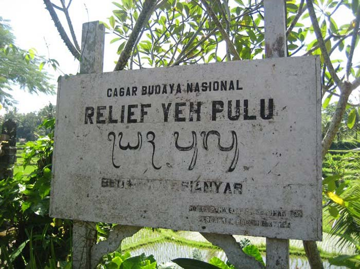
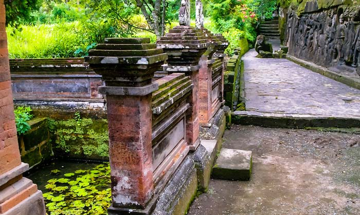
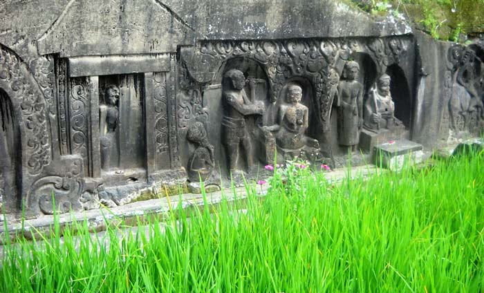

Yeh Pulu
Salah satu tempat wisata budaya di Bali yang unik dan jarang wisatawan tahu adalah pura Yeh Pulu Ubud Bali. Sebagian besar wisatawan yang berkunjung ke pura Yeh Pulu Ubud adalah wisatawan asing. Wisatawan domestik sangat jarang mengunjungi objek wisata di Bali ini. Hal ini disebabkan karena kurangnya promosi akan tempat wisata sejarah ini, untuk wisatawan domestik. Di halaman situs ini, saya akan menuliskan kepada pembaca tentang pura Yeh Pulu Bali, betapa uniknya dan bersejarahnya lokasi wisata Yeh Pulu Ubud, sehingga layak untuk dijadikan salah satu objek wisata di Bali yang harus dikunjungi.
Lokasi Pura Yeh Pulu Ubud Bali
Lokasi dari objek wisata Yeh Pulu Bali, berada di desa Bedulu, Kecamatan Blahbatuh, Kabupaten Gianyar. Karena terletak di desa Bedahulu, pura Yeh Pulu juga sering disebut dengan nama Yeh Pulu Bedulu. Untuk berwisata ke objek wisata Yeh Pulu, anda tidak harus secara khusus meluangkan waktu untuk ke objek wisata di Ubud ini. Karena tempat wisata Yeh Pulu, searah dengan rute Kuta - Denpasar - Ubud - Kintamani.
Rute wisata Kuta - Denpasar - Ubud - Kintamani, salah satu rute favorit wisatawan dalam memilih paket tour Bali. Salah satu yang paling favorit adalah paket tour Ubud Kintamani. Jika anda memang menyukai wisata ke tempat bersejarah, maka pura Goa Gajah jangan anda lewatkan, karena lokasinya berdekatan dengan Yeh Pulu Relief.

Yang unik dari lokasi Pura ini, karena terletak di lokasi persawahan. Lokasi persawahaan sangat luas dan tersebar di segala penjuru desa Bedulu. Jadi saat wisata, anda tidak hanya melihat relief sejarah pura, selain itu anda juga akan melihat pemandangan persawahaan yang tertata rapi.
Untuk mencapai lokasi dari pura ini, anda harus melewati jalanan setapak lumayan kecil. Jalan setapak ini sangat terawat, baik dari sisi kebersihan dan keindahan. Perawatan akan jalan setapak ini, dilakukan oleh masyarakat sekitar yang memiliki organisasi pertanian, dengan nama Subak. Di lokasi objek wisata ini, tersedia sarana tempat parkir, toilet, toko penjual oleh-oleh khas Bali dan jasa pemandu wisata, jika anda ingin tahu lebih tentang sejarah Pura Yeh Pulu Bedulu.
Tempat Wisata Pura Dengan Relief Kuno
Di objek wisata ini, anda akan dapat melihat banyak relief kuno yang sangat unik. Karena terdapat banyak relief di tempat wisata pura ini, maka tempat wisata ini sering disebut dengan nama relief Yeh Pulu. Relief bersejarah yang terdapat di sini, di pahat pada batu cadas, dan panjang relief sekitar 25 meter dengan lebar relief 2 meter.
Sejarah Pura & Arti Nama Yeh Pulu Bedulu
Sejarah relief yang terdapat di lokasi wisata ini, menceritakan tentang sejarah kehidupan masyarakat Bali kuno, pada masa kerajaan Bedahulu. Tidak hanya relief didinding, lubang menjorok kedalam untuk tempat bertapa, juga ada di objek wisata ini. Konon tempat ini digunakan untuk bertapa raja Bedahulu, sebelum beliau kalah berperang melawan kerajaan Majapahit pada tahun 1343.
Yeh artinya air dan Pulu artinya gentong yang dulunya digunakan sebagai tempat beras. Gentong ini ditempatkan di bagian barat dari Yeh Pulu relief dan berada tengah tempat air suci. Jika anda menyukai wisata pura di Bali, untuk informasi, salah satu pura di Bali yang paling disukai wisatawan untuk di kunjungi adalah pura Ulun Danu Beratan. Jika anda sempat melihat di brosur atau majalah wisata yang memperlihatkan pura berada di tengah danau, inilah pura Ulun Danu Beratan.
Aktivitas Wisata Alam Ubud
Selain wisata ke pura ini, tempat wisata di Ubud Bali, juga menyediakan aktivitas wisata alam yang bersifat petualangan. Wisata petualangan alam di Ubud yang paling disukai wisatawan domestik adalah Bali rafting. Salah satu tempat rafting di Bali yang bersifat rekreasi adalah sungai Ayung Ubud.
Sungai Ayung Ubud, setiap hari ramai dengan kunjungan wisatawan yang ingin melakukan aktivitas rafting. Salah satu perusahaan yang terkenal dan peritis rafting di Ubud bernama Sobek rafting. Wisatawan domestik saat ini telah menjadikan wisata rafting sebagai salah satu aktivitas wisata di Bali.